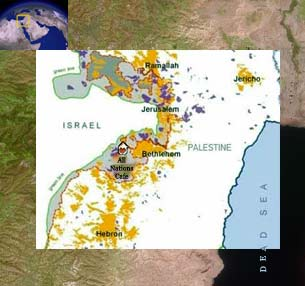

transforming CHECKPOINTS into MEETING-POINTS
| home |
| about |
| work |
| story |
| team |
| schedule |
| links |
| EIN HANIYA |
“Each of us in our own way can try to spread compassion into people’s hearts...love, compassion, and a sense of universal responsibility are the sources of peace...We can never obtain peace in the outer world until we make peace with ourselves...I pray for a more friendly, more caring, and more understanding human family on this planet. To all who dislike suffering, who cherish lasting happiness, this is my heartfelt appeal.” The 14th Dalai Lama of Tibet Our flagship project, All Nations Café at Ein Haniya, is not just a culture and arts community center, nor is it merely a Middle Eastern style café on the Bethlehem–Jerusalem road. It is indeed an open, friendly, non-intimidating meeting place in the midst of a war zone, right on the border of Israel and Palestine, where Israelis, including soldiers and settlers, children and adults, religious and secular, together with Palestinian refugees, farmers, politicians, youth and elderly people, and international visitors, tourists and volunteers communicate intimately, equally, humanely, carefully building understanding, trust and hope. In the summer of 2006, during the war in Lebanon and Gaza, we held a Middle East Families Camp at Ein Haniya. During the autumn and winter of 2006-7 we had weekly gatherings of great love, and in the spring of 2007 we had there a Middle East Spring Camp in the midst of flowers of all colors and hues who burst from every stone terrace. In between, during the winter months we had been gathering almost every week, sharing warmth and radiating light in the long dark evenings, gradually growing our All Nations family of Palestinians, Israelis and internationals, and establishing, step by step, a home in the valley where we can all come together, even at stormy times of curfews and war. When it got too wet, we invested our time in visiting each other's homes in Halhul, Nahalin and Dheishe. Our family members, coming from West and East Jerusalem, Bethlehem and Hebron, and the surrounding villages and refugee camps, have managed to create an intimate space, where we can begin to know each other, share the depth of our joys and sorrows, and offer each other support. HOW TO GET THERE Coming from the West Bank and from Gush Etzion, you go from Beit Jala and Har Gilo towards Walaja and Jerusalem. Down the steep road to the bottom of Refa'im valley, you pass by the Ein Haniya spring on your right, and after a few hundred meters see three houses on the right side of the road. The third one is the place! Click for a detailed map of Ein Haniya, Refa'im Valley, Wallaja, Battir, Jerusalem and Bethlehem. |
MORE PROJECTS SPRINGS and TERRACES Working together on the land, farmers and volunteers of all nations. Restoring terraces and springs, collecting garbage, digging water catchment cellars and so on. Read more.. PLANTING a FUTURE HOLY LAND CARAVANS |